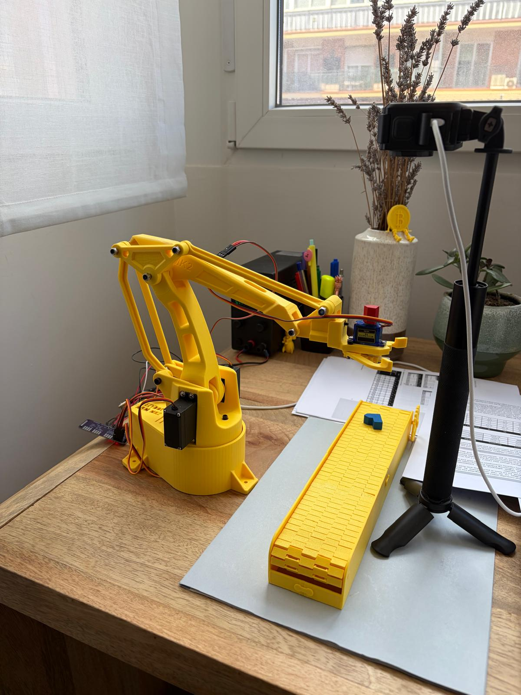
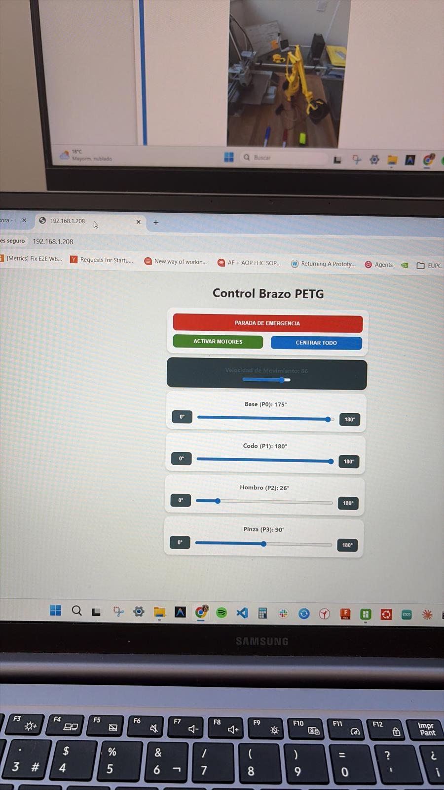

Bridging cloud-based Embeded Robotics specialized models with physical hardware to execute autonomous actions via natural language.
Traditional computer vision pipelines in robotics, like fine-tuned YOLO object detectors, are exceptional at identifying pre-defined classes within a closed environment. However, they lack open-ended semantic reasoning. A YOLO system knows what a red block is, but it cannot infer that a user saying "Pick up the item that is usually found in a casino" refers to a red dice.
To overcome this limitation, I transitioned the 4-axis robotic arm from a rigid local detector to a Vision-Language-Action (VLA) reasoning pipeline. By combining large cloud-based multimodal intelligence with custom edge inverse kinematics, the robotic arm gains the reasoning capacity to interpret complex instructions, contextualize its physical environment, and decide its own actions dynamically.
The system operates in a distributed loop split between cloud intelligence and local microsecond execution:
The physical system was engineered using a custom 3D-printed EEZYbotARM MK2 (4-axis configuration) driven by high-torque MG996R servo motors. To achieve fluid, reliable movements, the workspace uses a dedicated overhead workspace camera calibrated to capture the absolute coordinate grid.
Rather than equipping the robotic arm with a heavy onboard GPU, the architecture implements a strict boundary: **Cloud-based semantic reasoning** (multimodal API calls) takes care of the heavy classification, while the **edge microcontroller (ESP8266)** focuses entirely on low-latency microsecond servo angle execution via high-speed UDP wireless links.

📷 PlaceRoboArm-VLA-Setup.jpeg in this folder to display setupThe physical hardware setup showing the overhead camera and the EEZYbotARM ready for multimodal commands.
To monitor and control this distributed system, I developed a custom web dashboard. It bridges manual telemetry overrides and automatic VLA command generation. The dashboard displays the live camera stream overlay, real-time voice command transcription, recognized bounding box locations, and calculated target joint angles (Base, Shoulder, Elbow, Gripper).

📷 PlaceRoboArm-Web-Controls.jpeg in this folder to display dashboardThe custom web dashboard used to interface with the Gemini API, displaying the live feed, the recognized text command, and the translated kinematic output.
The core breakthrough of the VLA approach is its ability to perform high-level zero-shot reasoning. In the demonstration below, the robotic arm is commanded to: "Pick up the item that is usually found in a casino."
Unlike pre-programmed computer vision databases, the system does not look for a label named "casino". Instead, Gemini performs contextual inference, correctly deduces that the **dice** is the target item, isolates its visual boundaries, and feeds coordinates to the edge translation scripts to coordinate a flawless pick-and-place actuation sequence.
Live demonstration of the VLA integration. The system successfully interprets a complex voice command, uses Gemini to locate the target object, and executes the physical retrieval via the local kinematics engine.
Bridging cloud inference with mechanical edge execution introduced several technical hurdles, solved through custom optimization layers:
# Mapping normalized API coordinates to Physical Inverse Kinematics (mm)
def map_camera_to_physical(norm_x, norm_y, img_width=640, img_height=480):
# Convert normalized scale back to pixel dimensions
pixel_x = (norm_x / 1000.0) * img_width
pixel_y = (norm_y / 1000.0) * img_height
# Apply pre-calibrated homography transformation
physical_coords = cv2.perspectiveTransform(
np.array([[[pixel_x, pixel_y]]], dtype=np.float32),
homography_matrix
)
return physical_coords[0][0] # Returns [X_mm, Y_mm]